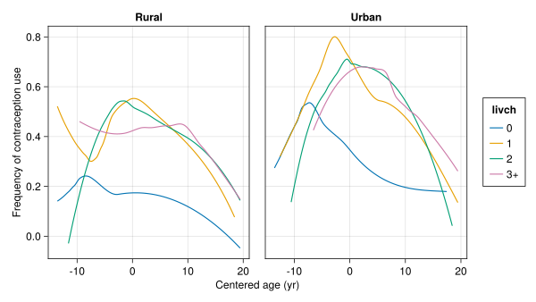

Code
using AlgebraOfGraphics
using CairoMakie
using DataFrameMacros
using DataFrames
using MixedModels
using MixedModelsMakie
using SMLP2023: dataset
CairoMakie.activate!(; type="svg")
import ProgressMeter
ProgressMeter.ijulia_behavior(:clear)Phillip Alday, Douglas Bates, and Reinhold Kliegl
2023-09-13
Load the packages to be used
A GLMM (Generalized Linear Mixed Model) is used instead of a LMM (Linear Mixed Model) when the response is binary or, perhaps, a count with a low expected count.
The specification of the model includes the distribution family for the response and, possibly, the link function, g, relating the mean response, μ, to the value of the linear predictor, η.
To explain the model it helps to consider the linear mixed model in some detail first.
| Row | subj | days | reaction |
|---|---|---|---|
| String | Int8 | Float64 | |
| 1 | S308 | 0 | 249.56 |
| 2 | S308 | 1 | 258.705 |
| 3 | S308 | 2 | 250.801 |
| 4 | S308 | 3 | 321.44 |
| 5 | S308 | 4 | 356.852 |
| 6 | S308 | 5 | 414.69 |
| 7 | S308 | 6 | 382.204 |
| 8 | S308 | 7 | 290.149 |
| 9 | S308 | 8 | 430.585 |
| 10 | S308 | 9 | 466.353 |
| 11 | S309 | 0 | 222.734 |
| 12 | S309 | 1 | 205.266 |
| 13 | S309 | 2 | 202.978 |
| ⋮ | ⋮ | ⋮ | ⋮ |
| 169 | S371 | 8 | 350.781 |
| 170 | S371 | 9 | 369.469 |
| 171 | S372 | 0 | 269.412 |
| 172 | S372 | 1 | 273.474 |
| 173 | S372 | 2 | 297.597 |
| 174 | S372 | 3 | 310.632 |
| 175 | S372 | 4 | 287.173 |
| 176 | S372 | 5 | 329.608 |
| 177 | S372 | 6 | 334.482 |
| 178 | S372 | 7 | 343.22 |
| 179 | S372 | 8 | 369.142 |
| 180 | S372 | 9 | 364.124 |
contrasts = Dict(:subj => Grouping())
m1 = let f = @formula reaction ~ 1 + days + (1 + days | subj)
fit(MixedModel, f, sleepstudy; contrasts)
end
println(m1)Linear mixed model fit by maximum likelihood
reaction ~ 1 + days + (1 + days | subj)
logLik -2 logLik AIC AICc BIC
-875.9697 1751.9393 1763.9393 1764.4249 1783.0971
Variance components:
Column Variance Std.Dev. Corr.
subj (Intercept) 565.51068 23.78047
days 32.68212 5.71683 +0.08
Residual 654.94145 25.59182
Number of obs: 180; levels of grouping factors: 18
Fixed-effects parameters:
──────────────────────────────────────────────────
Coef. Std. Error z Pr(>|z|)
──────────────────────────────────────────────────
(Intercept) 251.405 6.63226 37.91 <1e-99
days 10.4673 1.50224 6.97 <1e-11
──────────────────────────────────────────────────The response vector, y, has 180 elements. The fixed-effects coefficient vector, β, has 2 elements and the fixed-effects model matrix, X, is of size 180 × 2.
180-element view(::Matrix{Float64}, :, 3) with eltype Float64:
249.56
258.7047
250.8006
321.4398
356.8519
414.6901
382.2038
290.1486
430.5853
466.3535
222.7339
205.2658
202.9778
⋮
350.7807
369.4692
269.4117
273.474
297.5968
310.6316
287.1726
329.6076
334.4818
343.2199
369.1417
364.1236180×2 Matrix{Float64}:
1.0 0.0
1.0 1.0
1.0 2.0
1.0 3.0
1.0 4.0
1.0 5.0
1.0 6.0
1.0 7.0
1.0 8.0
1.0 9.0
1.0 0.0
1.0 1.0
1.0 2.0
⋮
1.0 8.0
1.0 9.0
1.0 0.0
1.0 1.0
1.0 2.0
1.0 3.0
1.0 4.0
1.0 5.0
1.0 6.0
1.0 7.0
1.0 8.0
1.0 9.0The second column of X is just the days vector and the first column is all 1’s.
There are 36 random effects, 2 for each of the 18 levels of subj. The “estimates” (technically, the conditional means or conditional modes) are returned as a vector of matrices, one matrix for each grouping factor. In this case there is only one grouping factor for the random effects so there is one one matrix which contains 18 intercept random effects and 18 slope random effects.
1-element Vector{Matrix{Float64}}:
[2.8158188723726987 -40.04844155099845 … 0.7232620681342852 12.118907791462991; 9.07551177315976 -8.64407948654385 … -0.9710526407852382 1.3106980710461535]2×18 Matrix{Float64}:
2.81582 -40.0484 -38.4331 22.8321 … -24.7101 0.723262 12.1189
9.07551 -8.64408 -5.5134 -4.65872 4.6597 -0.971053 1.3107There is a model matrix, Z, for the random effects. In general it has one chunk of columns for the first grouping factor, a chunk of columns for the second grouping factor, etc.
In this case there is only one grouping factor.
180×36 Matrix{Int64}:
1 0 0 0 0 0 0 0 0 0 0 0 0 … 0 0 0 0 0 0 0 0 0 0 0 0
1 1 0 0 0 0 0 0 0 0 0 0 0 0 0 0 0 0 0 0 0 0 0 0 0
1 2 0 0 0 0 0 0 0 0 0 0 0 0 0 0 0 0 0 0 0 0 0 0 0
1 3 0 0 0 0 0 0 0 0 0 0 0 0 0 0 0 0 0 0 0 0 0 0 0
1 4 0 0 0 0 0 0 0 0 0 0 0 0 0 0 0 0 0 0 0 0 0 0 0
1 5 0 0 0 0 0 0 0 0 0 0 0 … 0 0 0 0 0 0 0 0 0 0 0 0
1 6 0 0 0 0 0 0 0 0 0 0 0 0 0 0 0 0 0 0 0 0 0 0 0
1 7 0 0 0 0 0 0 0 0 0 0 0 0 0 0 0 0 0 0 0 0 0 0 0
1 8 0 0 0 0 0 0 0 0 0 0 0 0 0 0 0 0 0 0 0 0 0 0 0
1 9 0 0 0 0 0 0 0 0 0 0 0 0 0 0 0 0 0 0 0 0 0 0 0
0 0 1 0 0 0 0 0 0 0 0 0 0 … 0 0 0 0 0 0 0 0 0 0 0 0
0 0 1 1 0 0 0 0 0 0 0 0 0 0 0 0 0 0 0 0 0 0 0 0 0
0 0 1 2 0 0 0 0 0 0 0 0 0 0 0 0 0 0 0 0 0 0 0 0 0
⋮ ⋮ ⋮ ⋱ ⋮ ⋮ ⋮
0 0 0 0 0 0 0 0 0 0 0 0 0 0 0 0 0 0 0 0 0 1 8 0 0
0 0 0 0 0 0 0 0 0 0 0 0 0 0 0 0 0 0 0 0 0 1 9 0 0
0 0 0 0 0 0 0 0 0 0 0 0 0 … 0 0 0 0 0 0 0 0 0 0 1 0
0 0 0 0 0 0 0 0 0 0 0 0 0 0 0 0 0 0 0 0 0 0 0 1 1
0 0 0 0 0 0 0 0 0 0 0 0 0 0 0 0 0 0 0 0 0 0 0 1 2
0 0 0 0 0 0 0 0 0 0 0 0 0 0 0 0 0 0 0 0 0 0 0 1 3
0 0 0 0 0 0 0 0 0 0 0 0 0 0 0 0 0 0 0 0 0 0 0 1 4
0 0 0 0 0 0 0 0 0 0 0 0 0 … 0 0 0 0 0 0 0 0 0 0 1 5
0 0 0 0 0 0 0 0 0 0 0 0 0 0 0 0 0 0 0 0 0 0 0 1 6
0 0 0 0 0 0 0 0 0 0 0 0 0 0 0 0 0 0 0 0 0 0 0 1 7
0 0 0 0 0 0 0 0 0 0 0 0 0 0 0 0 0 0 0 0 0 0 0 1 8
0 0 0 0 0 0 0 0 0 0 0 0 0 0 0 0 0 0 0 0 0 0 0 1 9The defining property of a linear model or linear mixed model is that the fitted values are linear combinations of the fixed-effects parameters and the random effects. We can write the fitted values as
180-element Vector{Float64}:
254.22092372085748
273.7637214536127
293.30651918636795
312.8493169191231
332.39211465187833
351.93491238463355
371.47771011738877
391.020507850144
410.56330558289915
430.1061033156544
211.35666329748636
213.17986977053795
215.00307624358956
⋮
328.0982334671007
337.594466785911
263.5240126399478
275.3019966705894
287.079980701231
298.8579647318726
310.6359487625142
322.41393279315577
334.1919168237974
345.969900854439
357.74788488508057
369.52586891572224180-element Vector{Float64}:
254.22092372085748
273.7637214536127
293.30651918636795
312.8493169191231
332.39211465187833
351.9349123846335
371.4777101173887
391.020507850144
410.56330558289915
430.10610331565437
211.35666329748636
213.17986977053792
215.00307624358956
⋮
328.0982334671007
337.594466785911
263.5240126399478
275.3019966705894
287.079980701231
298.8579647318726
310.6359487625142
322.4139327931558
334.19191682379744
345.96990085443906
357.7478848850806
369.52586891572224In symbols we would write the linear predictor expression as \[ \boldsymbol{\eta} = \mathbf{X}\boldsymbol{\beta} +\mathbf{Z b} \] where \(\boldsymbol{\eta}\) has 180 elements, \(\boldsymbol{\beta}\) has 2 elements, \(\bf b\) has 36 elements, \(\bf X\) is of size 180 × 2 and \(\bf Z\) is of size 180 × 36.
For a linear model or linear mixed model the linear predictor is the mean response, \(\boldsymbol\mu\). That is, we can write the probability model in terms of a 180-dimensional random variable, \(\mathcal Y\), for the response and a 36-dimensional random variable, \(\mathcal B\), for the random effects as \[ \begin{aligned} (\mathcal{Y} | \mathcal{B}=\bf{b}) &\sim\mathcal{N}(\bf{ X\boldsymbol\beta + Z b},\sigma^2\bf{I})\\\\ \mathcal{B}&\sim\mathcal{N}(\bf{0},\boldsymbol{\Sigma}_{\boldsymbol\theta}) . \end{aligned} \] where \(\boldsymbol{\Sigma}_\boldsymbol{\theta}\) is a 36 × 36 symmetric covariance matrix that has a special form - it consists of 18 diagonal blocks, each of size 2 × 2 and all the same.
Recall that this symmetric matrix can be constructed from the parameters \(\boldsymbol\theta\), which generate the lower triangular matrix \(\boldsymbol\lambda\), and the estimate \(\widehat{\sigma^2}\).
2×2 LinearAlgebra.LowerTriangular{Float64, Matrix{Float64}}:
0.929221 ⋅
0.0181684 0.222645Compare the diagonal elements to the Variance column of
Writing the model for \(\mathcal Y\) as \[ (\mathcal{Y} | \mathcal{B}=\bf{b})\sim\mathcal{N}(\bf{ X\boldsymbol\beta + Z b},\sigma^2\bf{I}) \] may seem like over-mathematization (or “overkill”, if you prefer) relative to expressions like \[ y_i = \beta_1 x_{i,1} + \beta_2 x_{i,2}+ b_1 z_{i,1} +\dots+b_{36} z_{i,36}+\epsilon_i \] but this more abstract form is necessary for generalizations.
The way that I read the first form is
The conditional distribution of the response vector, \(\mathcal Y\), given that the random effects vector, \(\mathcal B =\bf b\), is a multivariate normal (or Gaussian) distribution whose mean, \(\boldsymbol\mu\), is the linear predictor, \(\boldsymbol\eta=\bf{X\boldsymbol\beta+Zb}\), and whose covariance matrix is \(\sigma^2\bf I\). That is, conditional on \(\bf b\), the elements of \(\mathcal Y\) are independent normal random variables with constant variance, \(\sigma^2\), and means of the form \(\boldsymbol\mu = \boldsymbol\eta = \bf{X\boldsymbol\beta+Zb}\).
So the only things that differ in the distributions of the \(y_i\)’s are the means and they are determined by this linear predictor, \(\boldsymbol\eta = \bf{X\boldsymbol\beta+Zb}\).
Consider first a GLMM for a vector, \(\bf y\), of binary (i.e. yes/no) responses. The probability model for the conditional distribution \(\mathcal Y|\mathcal B=\bf b\) consists of independent Bernoulli distributions where the mean, \(\mu_i\), for the i’th response is again determined by the i’th element of a linear predictor, \(\boldsymbol\eta = \mathbf{X}\boldsymbol\beta+\mathbf{Z b}\).
However, in this case we will run into trouble if we try to make \(\boldsymbol\mu=\boldsymbol\eta\) because \(\mu_i\) is the probability of “success” for the i’th response and must be between 0 and 1. We can’t guarantee that the i’th component of \(\boldsymbol\eta\) will be between 0 and 1. To get around this problem we apply a transformation to take \(\eta_i\) to \(\mu_i\). For historical reasons this transformation is called the inverse link, written \(g^{-1}\), and the opposite transformation - from the probability scale to an unbounded scale - is called the link, g.
Each probability distribution in the exponential family (which is most of the important ones), has a canonical link which comes from the form of the distribution itself. The details aren’t as important as recognizing that the distribution itself determines a preferred link function.
For the Bernoulli distribution, the canonical link is the logit or log-odds function, \[ \eta = g(\mu) = \log\left(\frac{\mu}{1-\mu}\right), \] (it’s called log-odds because it is the logarithm of the odds ratio, \(p/(1-p)\)) and the canonical inverse link is the logistic \[ \mu=g^{-1}(\eta)=\frac{1}{1+\exp(-\eta)}. \] This is why fitting a binary response is sometimes called logistic regression.
For later use we define a Julia logistic function. See this presentation for more information than you could possibly want to know on how Julia converts code like this to run on the processor.
logistic (generic function with 1 method)To reiterate, the probability model for a Generalized Linear Mixed Model (GLMM) is \[ \begin{aligned} (\mathcal{Y} | \mathcal{B}=\bf{b}) &\sim\mathcal{D}(\bf{g^{-1}(X\boldsymbol\beta + Z b)},\phi)\\\\ \mathcal{B}&\sim\mathcal{N}(\bf{0},\Sigma_{\boldsymbol\theta}) . \end{aligned} \] where \(\mathcal{D}\) is the distribution family (such as Bernoulli or Poisson), \(g^{-1}\) is the inverse link and \(\phi\) is a scale parameter for \(\mathcal{D}\) if it has one. The important cases of the Bernoulli and Poisson distributions don’t have a scale parameter - once you know the mean you know everything you need to know about the distribution. (For those following the presentation, this poem by John Keats is the one with the couplet “Beauty is truth, truth beauty - that is all ye know on earth and all ye need to know.”)
The contra dataset in the MixedModels package is from a survey on the use of artificial contraception by women in Bangladesh.
| Row | dist | urban | livch | age | use |
|---|---|---|---|---|---|
| String | String | String | Float64 | String | |
| 1 | D01 | Y | 3+ | 18.44 | N |
| 2 | D01 | Y | 0 | -5.56 | N |
| 3 | D01 | Y | 2 | 1.44 | N |
| 4 | D01 | Y | 3+ | 8.44 | N |
| 5 | D01 | Y | 0 | -13.56 | N |
| 6 | D01 | Y | 0 | -11.56 | N |
| 7 | D01 | Y | 3+ | 18.44 | N |
| 8 | D01 | Y | 3+ | -3.56 | N |
| 9 | D01 | Y | 1 | -5.56 | N |
| 10 | D01 | Y | 3+ | 1.44 | N |
| 11 | D01 | Y | 0 | -11.56 | Y |
| 12 | D01 | Y | 0 | -2.56 | N |
| 13 | D01 | Y | 1 | -4.56 | N |
| ⋮ | ⋮ | ⋮ | ⋮ | ⋮ | ⋮ |
| 1923 | D61 | N | 0 | -11.56 | Y |
| 1924 | D61 | N | 3+ | 1.44 | N |
| 1925 | D61 | N | 1 | -5.56 | N |
| 1926 | D61 | N | 3+ | 14.44 | N |
| 1927 | D61 | N | 3+ | 19.44 | N |
| 1928 | D61 | N | 2 | -9.56 | Y |
| 1929 | D61 | N | 2 | -2.56 | N |
| 1930 | D61 | N | 3+ | 14.44 | N |
| 1931 | D61 | N | 2 | -4.56 | N |
| 1932 | D61 | N | 3+ | 14.44 | N |
| 1933 | D61 | N | 0 | -13.56 | N |
| 1934 | D61 | N | 3+ | 10.44 | N |
| Row | dist | nrow |
|---|---|---|
| String | Int64 | |
| 1 | D01 | 117 |
| 2 | D02 | 20 |
| 3 | D03 | 2 |
| 4 | D04 | 30 |
| 5 | D05 | 39 |
| 6 | D06 | 65 |
| 7 | D07 | 18 |
| 8 | D08 | 37 |
| 9 | D09 | 23 |
| 10 | D10 | 13 |
| 11 | D11 | 21 |
| 12 | D12 | 29 |
| 13 | D13 | 24 |
| ⋮ | ⋮ | ⋮ |
| 49 | D49 | 4 |
| 50 | D50 | 19 |
| 51 | D51 | 37 |
| 52 | D52 | 61 |
| 53 | D53 | 19 |
| 54 | D55 | 6 |
| 55 | D56 | 45 |
| 56 | D57 | 27 |
| 57 | D58 | 33 |
| 58 | D59 | 10 |
| 59 | D60 | 32 |
| 60 | D61 | 42 |
The information recorded included woman’s age, the number of live children she has, whether she lives in an urban or rural setting, and the political district in which she lives.
The age was centered. Unfortunately, the version of the data to which I had access did not record what the centering value was.
A data plot, Figure 1, shows that the probability of contraception use is not linear in age - it is low for younger women, higher for women in the middle of the range (assumed to be women in late 20’s to early 30’s) and low again for older women (late 30’s to early 40’s in this survey).
If we fit a model with only the age term in the fixed effects, that term will not be significant. This doesn’t mean that there is no “age effect”, it only means that there is no significant linear effect for age.

contrasts = Dict(
:dist => Grouping(),
:urban => HelmertCoding(),
:livch => DummyCoding(), # default, but no harm in being explicit
)
nAGQ = 9
dist = Bernoulli()
gm1 = let
form = @formula(
use ~ 1 + age + abs2(age) + urban + livch + (1 | dist)
)
fit(MixedModel, form, contra, dist; nAGQ, contrasts)
endMinimizing 206 Time: 0:00:00 ( 1.66 ms/it)| Est. | SE | z | p | σ_dist | |
|---|---|---|---|---|---|
| (Intercept) | -0.6870 | 0.1686 | -4.08 | <1e-04 | 0.4786 |
| age | 0.0035 | 0.0092 | 0.38 | 0.7020 | |
| abs2(age) | -0.0046 | 0.0007 | -6.29 | <1e-09 | |
| urban: Y | 0.3484 | 0.0600 | 5.81 | <1e-08 | |
| livch: 1 | 0.8152 | 0.1622 | 5.02 | <1e-06 | |
| livch: 2 | 0.9165 | 0.1851 | 4.95 | <1e-06 | |
| livch: 3+ | 0.9153 | 0.1858 | 4.93 | <1e-06 |
Notice that the linear term for age is not significant but the quadratic term for age is highly significant. We usually retain the lower order term, even if it is not significant, if the higher order term is significant.
Notice also that the parameter estimates for the treatment contrasts for livch are similar. Thus the distinction of 1, 2, or 3+ childen is not as important as the contrast between having any children and not having any. Those women who already have children are more likely to use artificial contraception.
Furthermore, the women without children have a different probability vs age profile than the women with children. To allow for this we define a binary children factor and incorporate an age&children interaction.
Notice that there is no “residual” variance being estimated. This is because the Bernoulli distribution doesn’t have a scale parameter.
livch to a binary factor@transform!(contra, :children = :livch ≠ "0")
# add the associated contrast specifier
contrasts[:children] = EffectsCoding()EffectsCoding(nothing, nothing)gm2 = let
form = @formula(
use ~
1 +
age * children +
abs2(age) +
children +
urban +
(1 | dist)
)
fit(MixedModel, form, contra, dist; nAGQ, contrasts)
endMinimizing 149 Time: 0:00:00 ( 0.94 ms/it)| Est. | SE | z | p | σ_dist | |
|---|---|---|---|---|---|
| (Intercept) | -0.3614 | 0.1275 | -2.84 | 0.0046 | 0.4757 |
| age | -0.0131 | 0.0110 | -1.19 | 0.2352 | |
| children: true | 0.6054 | 0.1035 | 5.85 | <1e-08 | |
| abs2(age) | -0.0058 | 0.0008 | -6.89 | <1e-11 | |
| urban: Y | 0.3567 | 0.0602 | 5.93 | <1e-08 | |
| age & children: true | 0.0342 | 0.0127 | 2.69 | 0.0072 |
| Row | model | npar | deviance | AIC | BIC | AICc |
|---|---|---|---|---|---|---|
| Symbol | Int64 | Float64 | Float64 | Float64 | Float64 | |
| 1 | gm2 | 7 | 2364.92 | 2379.18 | 2418.15 | 2379.24 |
| 2 | gm1 | 8 | 2372.46 | 2388.73 | 2433.27 | 2388.81 |
Because these models are not nested, we cannot do a likelihood ratio test. Nevertheless we see that the deviance is much lower in the model with age & children even though the 3 levels of livch have been collapsed into a single level of children. There is a substantial decrease in the deviance even though there are fewer parameters in model gm2 than in gm1. This decrease is because the flexibility of the model - its ability to model the behavior of the response - is being put to better use in gm2 than in gm1.
At present the calculation of the geomdof as sum(influence(m)) is not correctly defined in our code for a GLMM so we need to do some more work before we can examine those values.
urban&dist as a grouping factorIt turns out that there can be more difference between urban and rural settings within the same political district than there is between districts. To model this difference we build a model with urban&dist as a grouping factor.
gm3 = let
form = @formula(
use ~
1 +
age * children +
abs2(age) +
children +
urban +
(1 | urban & dist)
)
fit(MixedModel, form, contra, dist; nAGQ, contrasts)
endMinimizing 141 Time: 0:00:00 ( 1.08 ms/it)| Est. | SE | z | p | σ_urban & dist | |
|---|---|---|---|---|---|
| (Intercept) | -0.3415 | 0.1269 | -2.69 | 0.0071 | 0.5761 |
| age | -0.0129 | 0.0112 | -1.16 | 0.2471 | |
| children: true | 0.6064 | 0.1045 | 5.80 | <1e-08 | |
| abs2(age) | -0.0056 | 0.0008 | -6.66 | <1e-10 | |
| urban: Y | 0.3936 | 0.0859 | 4.58 | <1e-05 | |
| age & children: true | 0.0332 | 0.0128 | 2.59 | 0.0096 |
| Row | model | npar | deviance | AIC | BIC | AICc |
|---|---|---|---|---|---|---|
| Symbol | Int64 | Float64 | Float64 | Float64 | Float64 | |
| 1 | gm3 | 7 | 2353.82 | 2368.48 | 2407.46 | 2368.54 |
| 2 | gm2 | 7 | 2364.92 | 2379.18 | 2418.15 | 2379.24 |
| 3 | gm1 | 8 | 2372.46 | 2388.73 | 2433.27 | 2388.81 |
Notice that the parameter count in gm3 is the same as that of gm2 - the thing that has changed is the number of levels of the grouping factor- resulting in a much lower deviance for gm3. This reinforces the idea that a simple count of the number of parameters to be estimated does not always reflect the complexity of the model.
| Est. | SE | z | p | σ_dist | |
|---|---|---|---|---|---|
| (Intercept) | -0.3614 | 0.1275 | -2.84 | 0.0046 | 0.4757 |
| age | -0.0131 | 0.0110 | -1.19 | 0.2352 | |
| children: true | 0.6054 | 0.1035 | 5.85 | <1e-08 | |
| abs2(age) | -0.0058 | 0.0008 | -6.89 | <1e-11 | |
| urban: Y | 0.3567 | 0.0602 | 5.93 | <1e-08 | |
| age & children: true | 0.0342 | 0.0127 | 2.69 | 0.0072 |
| Est. | SE | z | p | σ_urban & dist | |
|---|---|---|---|---|---|
| (Intercept) | -0.3415 | 0.1269 | -2.69 | 0.0071 | 0.5761 |
| age | -0.0129 | 0.0112 | -1.16 | 0.2471 | |
| children: true | 0.6064 | 0.1045 | 5.80 | <1e-08 | |
| abs2(age) | -0.0056 | 0.0008 | -6.66 | <1e-10 | |
| urban: Y | 0.3936 | 0.0859 | 4.58 | <1e-05 | |
| age & children: true | 0.0332 | 0.0128 | 2.59 | 0.0096 |
The coefficient for age may be regarded as insignificant but we retain it for two reasons: we have a term of age² (written abs2(age)) in the model and we have a significant interaction age & children in the model.
For a “typical” district (random effect near zero) the predictions on the linear predictor scale for a woman whose age is near the centering value (i.e. centered age of zero) are:
using Effects
design = Dict(
:children => [true, false], :urban => ["Y", "N"], :age => [0.0]
)
preds = effects(design, gm3; invlink=AutoInvLink())| Row | children | age | urban | use: Y | err | lower | upper |
|---|---|---|---|---|---|---|---|
| Bool | Float64 | String | Float64 | Float64 | Float64 | Float64 | |
| 1 | true | 0.0 | Y | 0.65894 | 0.0338298 | 0.62511 | 0.69277 |
| 2 | false | 0.0 | Y | 0.364866 | 0.0534102 | 0.311456 | 0.418276 |
| 3 | true | 0.0 | N | 0.467887 | 0.0281377 | 0.43975 | 0.496025 |
| 4 | false | 0.0 | N | 0.207262 | 0.0364057 | 0.170857 | 0.243668 |
age & children interaction term.